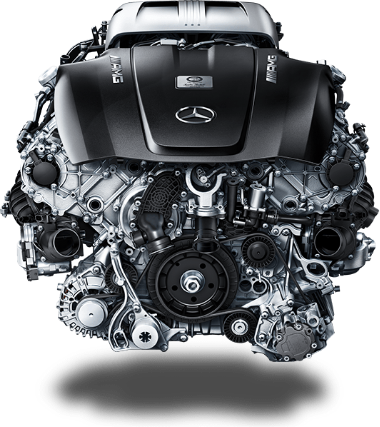
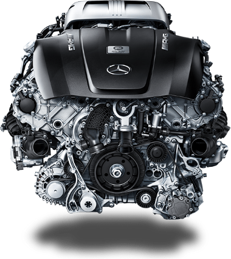

AMG GT Coupé
The Mercedes-AMG GT combines the fascination of an authentic sports car with segment-specific technology leadership and high practicality. With a top speed of 304 km/h and an acceleration from 0 to 100 km/h in 4.0 seconds, the Mercedes-AMG GT fits optimally into a sporty lifestyle. He expresses the essence of the performance brand AMG.
Interior.
The cockpit impresses with its high-tech interior: a user interface concept with fully digital instruments and a 10.2-inch display. At the center is the new center console with innovative display switches. With the AMG Performance steering wheel in Nappa leather with AMG steering wheel buttons, the vehicle is under optimal control. Extremely high-quality materials give the interior a handcrafted character.


 


Powertrain.
An aggregate of racing-level performance - the V8 twin-turbo with twin turbochargers inside is designed for maximum performance and dynamic engine mounts adapt to any driving situation. In addition, the dry sump lubrication deepens the low installation position even further. Thrilling: explosive responsiveness with high torque.

Fuel consumption combined:
12.4 l/100 km-
CO2 emissions combined:
284 g/km - Emission Statement